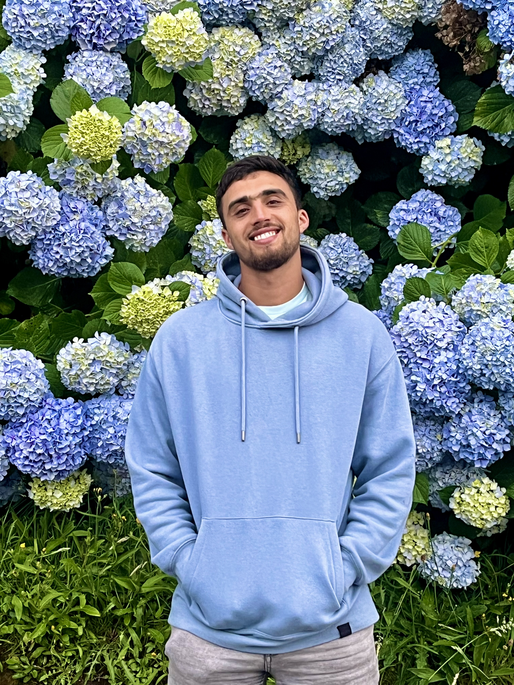
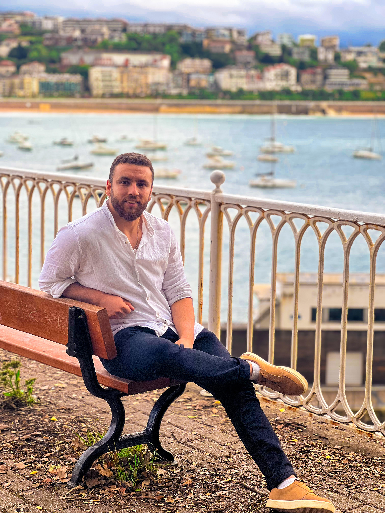
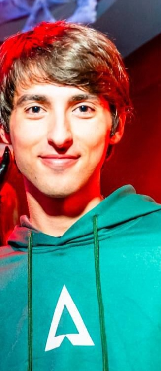

About us
At "ZONEX", we create unique events for lovers of video games, where you can immerse yourself in the gamer world completely. We offer everything from tournaments and video game zones, to cosplay areas, card games, and live shows. All This is accompanied by a varied gastronomic offer that makes each event in an unforgettable experience for the gamer community. Join and live your passion to the fullest!
I'm Anouar, 27 years old, I'm a passionate web developer with a strong focus on creating innovative digital solutions. With skills in programming and design, I am dedicated to building functional and attractive web experiences. My commitment to technology drives me to continue learning and improving in my field.
I am Abdelaziz, Director of IT and Technology with more than 5 years of experience in the sector. My focus is in leading and optimizing technological processes that drive my team and our organization towards excellence digital. I am passionate about technological innovation and believe in the power of well-designed solutions and a motivated team to bring our clients to the forefront of the sector.
My name is Jon, I am a database administrator here at the company Novaweb. I have more than 10 years of experience in management. and optimization of database systems. Specialized in MySQL, I focus on ensuring data security and availability. Passionate about technology, always looking to stay updated with the latest trends in the sector.
